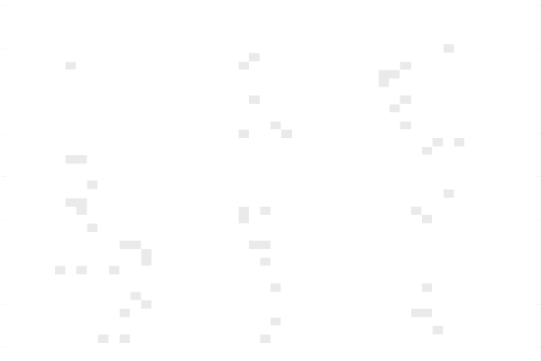

GOLIT is an adapted version of Conway’s ‘Game of Life’. It aims to visually represent how solid cell structures are formed from the binding of SpyTag and SpyCatcher.
- We attempted to optimise the rate at which cell adhesion occurs in the GOLIT
model by introducing a range of novel approaches:
- Combination of gene expression kinetics and cellular automata: Two ways to perform spatial analysis
- Artificial Intelligence: Genetic Algorithm for automated parameter optimization
- Experimental data: Wet Lab contribution for parameter optimization
What are we modelling?
We are modelling a cellular automaton to dynimically represent the adhesion of cells. Our Wet Lab team is engineering E. coli cells to express the surface protein intimin.

The binding partners SpyTag and SpyCatcher are then attached to the surface protein (this expression system is modelled in the LEGIT model ).

When SpyTag and SpyCatcher come in contact they form a covalent bond and allow cells to aggregate and form bacterial structures.

With GOLIT we are simulating the adhesion of these binding partners over time by considering the concentration of cells in a cell culture as well asassessing probabilities depending on specific conditions (described below). In short we are modelling the impact of light on cell adhesion.
How did we adapt the Game of Life?
Similarly to Conway's Game of Life, we are representing the cells on a 2D grid and when running the model,
the cells are constantly updated over a defined period of time.
In the GOLIT model the cells can either be in the “bound” or “unbound” state. The game requires to define the state of all the cells on the grid
and update the grid according to a set of rules after each time point. The state of a cell at a particular
time point depends on the the state of its neighboring cells as well as the concentration of SpyTag/
SpyCatcher expressed on the surface of the cells.
The rules below assign probabilities of one cell becoming "bound" depending on the
number of neighbors in the "bound" state it has.
Rules of the Game of LIT
| Number of "bound" neighbors | Probability of binding (%) |
|---|---|
| 0 | 20 |
| 1 | 30 |
| 2 | 60 |
| 3 | 80 |
| 4 | 99 |
Combination of ODE and Cellular Automata
Aim: Determine which light intensity allows the fastest cell aggregation, i.e. binding of SpyTag and SpyCatcher
The particularity of the GOLIT model lies in fact that we are combining rate kinetics of protein expression with cellular
automata for spatial analysis. The concentration of SpyTag and SpyCatcher expressed on the surface of the engineered E. coli
cells is critical for the efficiency of cell adhesion. The LEGIT model uses rate kinetics to model the rate of intimin expressed
on the surface of the bacteria for light intensities within the range 0-70 W/cm2.
For the purpose of this model we are assuming that the concentration of intimin expressed corresponds
to the amount of SpyTag/ SpyCatcher on the surface of the cells. Since updating the grid in the GOLIT
model depends on the concentration of protein expressed, we extracted the concentrations of intimin
expressed from the LEGIT model and fed it into the GOLIT model.
- Setting up the Initial conditions for the model:
- Dimensions of the 2D grid (height and length)
- The initial amount of bound cells at time point, t=0
- The initial amount of unbound cells at time point, t=0
- The number of generations, i.e. the number of times the grid will be updated
- The duration of each generation
Click here to check out our code!
Results
We ran the GOLIT model for light intensities 0W/cm2, 18W/cm2, 35W/cm2,
53W/cm2, and 70W/cm2, i.e. the same values tested in the intimin expression model (LEGIT).
For each light intensity tested, we plotted the number of cells vs. time points.
- Setting up the conditions for the game:
- Dimensions of the 2D grid: 50x50 matrix
- Evaluate the adhesion of cells for 15 generations
- Initially at time, t=0, no cells are in the "bound" state
- Black cells represent "bound" cells and white cells are "unbound" cells

Fig. 1 For light intensity 0 W/cm2, the plot shows the number of bound cells vs. number of generations and the grid visually represents the amount of bound cells after 15 generations
.Fig. 2 For light intensity 18 W/cm2, the plot shows the number of bound cells vs. number of generations and the grid is a visual representation of bound cells obtained after 15 generations

Fig. 3 Similarly, for light intensity 35 W/cm2, the plot represents teh rate of binding by plotting the number of bound cells vs. number of generations and the grid visually represents the amount of bound cells after 15 generations
.Fig. 4 Shows the number of bound cells vs. number of generations and the grid of bound/ unbound cells for light intensity 53 W/cm2
.
Fig. 5 The plot shows the number of bound cells vs. number of generations for 53 W/cm2 and the grid shows teh ratio of bound/unbound cells after 15 generations
Note that the GOLIT model is based on probabilities and that exact values will change every time the model is ran. We are only interested in the genral trends rather than precise numbers.
| Light intensity (W/cm2) | Number of "bound" cells | Percentage of bound cells (%) |
|---|---|---|
| 0 | 264 | 11 |
| 18 | 2014 | 81 |
| 35 | 2008 | 83 |
| 53 | 1684 | 67 |
| 70 | 1640 | 66 |
Summary table the efficiency of binding for every light intensity tested.
Given the dimensions of the grid 50x50, we know that the maximum number of "bound" cells is 2500. The ultimate aim of the GOLIT model is to obtain a black grid, i.e. 100% bound cells. To start off we ran the model for 15 generations and compared the performance of each light intensity tested. From the LEGIT model we know that 18W/cm2 gives the highest production of surface protein. We observe a the same result when running the GOLIT model, since 18W/cm2 gives the highest number of bound cells after 15 generations.
When running the model for 15 generations, the focus was not put on filling up the grid but to compare the rates at which the grids fill up, i.e. rates at which the cells aggregate. Now, given that 18W/cm2 represents the most efficient conditions to for bacterial cell adhesion, we want to test the number of generations that are required to fill up the grid.
Fig. 6 shows number of aggregated cells after 80 generations for 18W/cm2
.As mentioned above, we identified the light intensity of 18W/cm2 to give the highest rate of cell aggregation. Hence, we ran the model again at this light to determine the time required to fill up the grid. We obtained an efficiency of binding of 99% when running the model for 80 generations. The next step is to optimize the model such as to reduce the number of generations needed to fill up the grid.
Making the Model smart: incorporating Artificial Intelligence
Aim: Optimize the light distribution pattern on the initial grid to allow the
fastest rate of cell aggregation.
We decided to upgrade our model by incorporating artificial intelligence, more particularly
Genetic Algorithm (GA) . Genetic Algorithms, a type of subsymbolic artificial agents, adopt the
principles of Darwinian evolution to tackle the challenge of parameter optimization.
In the context of GOLIT we are applying a genetic algorithm to optimize the initial grid,
i.e. the grid at time, t=0. In other words, this means that we are using Artificial Intelligence
to generate the initial pattern of “bound” cells on the grid that will allow the fastest rate of cell
adhesion. The only input arguments given are the maximum number of cells to be placed on the initial
grid. The model then runs a number of “agents” that generate different patterns according to random
probabilities. The genetic algorithm selects the “best agent”, i.e. the “agent” showing the pattern
that will allow cells to aggregate fastest and therefore allow for the most efficient cell aggregation.
Click here to access Github
How does it work?

When no light is shone, all the cells on the grid are "unbound"

Define the number of "agents" the genetic algorithm should test

The genetic algorithm selects the "best agent"
Results
As described above the genetic algorithm is an automated way of optimising the
conditions of the grid. In our case the dependent variable that we want to optimise is the time it takes
to fill up the grid, i.e. optimise the model such that the lowest possible number of generations is needed to
fill up the grid. The independent
variable that affects time is the initial light pattern.
Once the genetic algorithm has selected the "best agent", it provides two main results: the probabilities
we should set for the rules of the game and the number of generations that will be needed to fill up the
grid with those probabilities.

- When running the model in Python, the genetic Algorithm prints theses results:
- Finding best agent: the 5 probabilities listed correspond to the "optimal" rules that will allow the cells to aggregate fastest.
- Finding Cover time: this indicates the number of generations it will take for the grid to fill up, assuming the probabilities given by the best agent are used
Feeding the Model with Experimental Data
The ultimate goal of developing mathematical models is to create robust systems which are representative of reality. The best way to optimize parameters in a model is to tweek it with experimental data. Our Wet Lab team simulated the bacterial SpyTag/ SpyCatcher adhesion chemically, by testing the adhesion between Biotin and Avadin. Similarly, to SpyTag and SpyCatcher, Biotin and Avadin form a covalent bond. This experimental data allowed us to optimize the concentration of surface proteins needed to achieve the highest binding rate.
Click here to check the protocol of the cell aggregation experiment
[MISSING experimental data ]